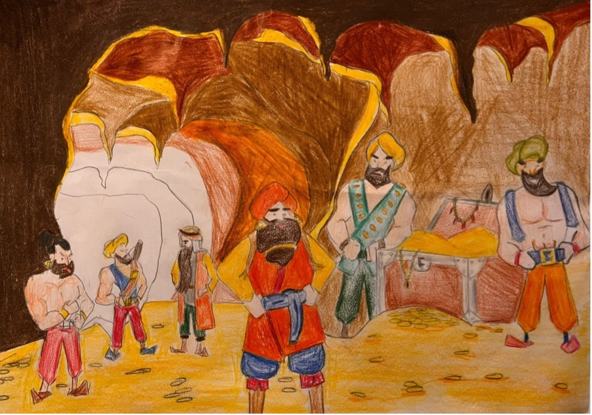

Ben Ali Baba… “Binbir Gece Masalları”nın en bilinen kahramanlarından biriyim. Arap masal geleneğinin bir kahramanı olmama rağmen Türkler arasında da sevilerek anlatıldım, okundum. Ağabeyim Kasım’la birlikte İran’ın bir şehrinde yaşardım. Babamız ölünce kalan azıcık mirası hemen bitirdik, sersefil bir şekilde ortada kalakaldık. Ağabeyim Kasım hırslı ve düzenbazlıkla iş tutan biri olduğundan hemen zengin oldu ve sahtekâr ve güzeller güzeli bir kadınla evlendi. Bense hırstan uzak, alçakgönüllü, azla yetinen biriydim. Odunculuk yaparak hayatımı kazanmaya çalıştım. Zamanla üç eşeğim oldu ve ormandan kestiğim odunları bu eşeklerle taşıdım. Fakir oduncular üzerinde öyle bir güven uyandırdım ki içlerinden biri beni kızıyla evlendirdi. Karım ve çocuklarımla birlikte odunculuk mesleğini sürdürdüm. Bir gün ormanda odun keserken bir grup atlıya rastladım ve gizlenerek onları izledim. Bunlar başlarında reisleri olan kırk haramiler idi. Başlarındaki reis bir kayanın önünde durarak “Açı susam, açıl” diye seslendi. Mağara kapısı açılınca kırk harami içeri girdi, bunların ardından mağara içine giren haramilerin başı “Kapan susam, kapan” diye seslenince kapı kapandı. Kırk haramiler başlarındaki reisleriyle birlikte mağaradan çıkıp gidince kaya önüne geldim ve harami başının söylediği sözü tekrarladım, kapı açıldı. Mağara içi değerli eşyalarla, atınla, mücevhere dolu idi. Bunlar haramilerin insanları soyarak mağaraya depoladıkları değerli şeylerdi. Bunları görünce üç torbamı altın dinarlarla paraya çevrilmesi kolay şeylerle doldurup mağaradan çıktım. “Kapan susam, kapan” deyince mağara kapısı kapandı. Torbaları eşeklerime yükleyip evime getirdim. Karım içi altın dinarlarla ve paraya çevrilmesi kolay değerli şeyleri görünce bunları başımıza bela getireceğini düşündü, ben de olan bitenleri kendisine anlattım. Bu şeyler bana göre Tanrı’nın bize bir lütfuydu. Altınları ve diğer değerli şeyleri evin içine bir çukur kazıp gömmek istedim ama eşim bunları tartmak istedi. Eşim ağabeyimin eşine gitti ve tahıl ölçmek bahanesiyle ondan ölçü istedi. Ağabeyim Kasım’ın karısı gerçekte ne ölçüleceğini öğrenmek için verdiği ölçünün altına bir miktar iç yağı sürmüş. Karım altınları ölçtükten sonra ölçüyü aldığı yere götürdü. Ağabeyim Kasım’ın karısı ölçünün kuyruk yağı sürülen altına yapılan altın dinarı görmüş ve durumu hemen ağabeyime bildirmiş. Durumu anlayan ağabeyim kıskançlıktan çatlayacak gibi olmuş. Yanıma gelip işin aslını sorunca ben önce bir şey söylemek istemedim ama sonunda her şeyi anlattım. Altınların yarısına kendisine verebileceğimi söyledim ama benim hırslı ağabeyim tatmin olmadı. Benden habersiz yanına iki eşek alıp soluğu mağaranın önünde almış. “Açıl susam, açıl” deyince kapı açılmış, içeri girip çuvalları değerli şeylerle doldurmuş, çıkmak isterken sihirli sözü hatırlayamadığı için kapıyı tekrar açamamış. Bu sırada kırk haramiler gelip mağara girmiş ağabeyimi yakalayıp sıkıca bağlamışlar. Ona kim olduğunu, mağaraya nasıl girdiğini sorduklarında benim adımı vermiş. Korkudan evimi de tarif etmiş. Ağabeyim eve dönmeyince karısı bana gelip durumu bildirince ne olduğunu hemen anladım. Kasım’ı aramak için evden çıkınca kapımda kocaman bir çarpı işareti gördüm. Çok akıllı bir kadın olan karım bunu haramilerin yaptığını anladı, tüm komşu evlere de çarpı işareti koymaya başladı. Haramiler gece yarısı beni yakalamak için sokağa girdiklerinde tüm evlerde çarpı işareti gördüler. Harami başı ertesi gün çevredeki esnaflardan evimin hangisini öğrenip kırk tane küpe haramilerini sokmuş, kırk birinci küpede yağ doldurmuş bir halde kapıma dayandı. Harami başı bana kendisini tüccar olarak tanıttı ve evimde misafir kalmak istediğini, bir küp de yağ hediye edeceğini söyledi. Ben olan biteni anlamadan hemen içeri buyur ettim. Yemeğe oturduktan sonra benim akıllı karımdan bu durumdan şüphelenmiş ve mahzene inip küpleri kontrol etmiş. Seslendiğinde küplerin içindekiler ses vermişler. Durumu anlayan karım hemen mutfağa geri dönmüş ve kaynattığı kazandaki yağdan bir kepçe alıp küplerden bir tanesine dökmüş. Üstüne kızgın yağ gelen harami, çığlıklar atarak küpten fırlayıp evden kaçmış. Bu sesten korkan diğer haramiler de ne olduğunu anlamadan teker teker küplerinden fırlayıp kaçmışlar. Evde harami başından başka kimse kalmadı. Küpün içindeki adamlarına çıkın diye seslendiğinde durumu anladı. Kaçmaya çalışınca oğlumla birlikte yakalayıp sıkıca bağladık. Ardından mağaraya gidip ağabeyimi kurtardım. Ağabeyim tövbe etti. Benim sayemde ülkemiz bir daha haramileri hiç görmedi. Altın paraları herkese eşit olarak dağıttık. Böylece tüm ülke zengin oldu. Ben ve ağabeyim Kasım, ailelerimizle birlikte ömrümüzün sonuna kadar rahat ve mutlu yaşadık. (Masal metni için bk. Onaran, 1993: 203-252.)
